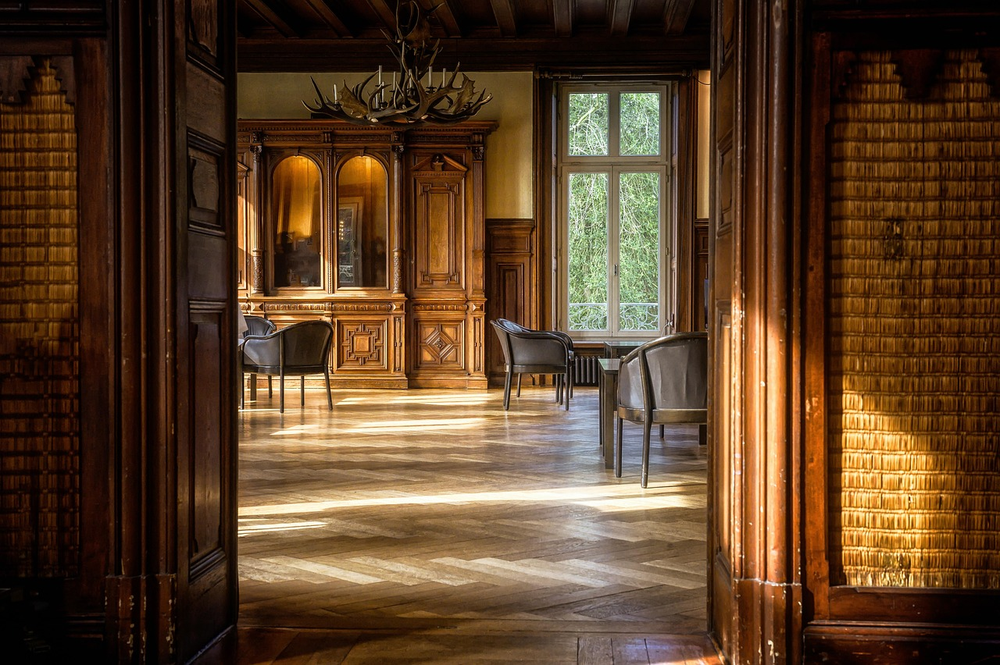
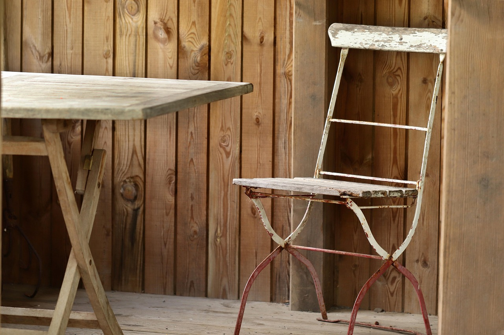
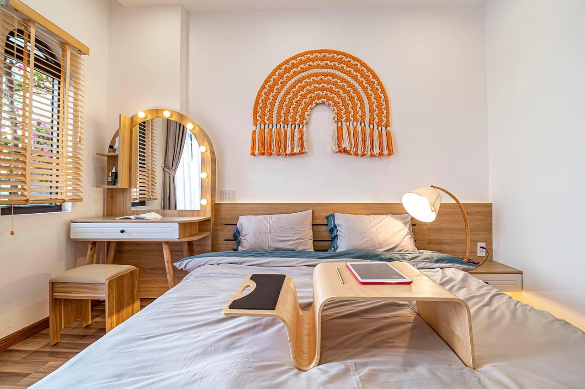

What Custom Furniture Actually Is
Custom furniture is the craft of designing and building standalone (or semi-standalone) pieces that have to work structurally, feel good to use, and look clean from every angle. Unlike cabinets (where a wall can hide sins) or framing (where drywall covers reality), furniture is exposed. Surfaces, edges, proportions, and joinery are the product.
People imagine furniture making as “creative woodworking.” Reality: it’s design judgment + tolerance discipline. You’re making a hundred decisions that determine whether the final piece looks expensive or looks like a well-intentioned science fair project. The job is less about one heroic cut and more about staying consistent across the entire build.



What You Spend Time Doing
Custom furniture is a workflow, but it’s less standardized than cabinets because every project changes. Your day usually lives in: planning and measuring, milling stock flat and square, joinery, dry-fitting, refining, sanding, finishing, and fixing tiny issues you didn’t know existed until the piece was assembled in real light.
- Design + planning: interpreting what a client wants, choosing proportions, and making workable dimensions.
- Milling stock: flattening, squaring, thicknessing, managing wood movement, and selecting grain.
- Joinery: mortise/tenon, dovetails, dados, loose tenons, dowels, or modern methods depending on build style.
- Dry-fit + refinement: clamping, checking square, correcting twist, tuning edge alignments and reveals.
- Surface prep + finishing: sanding discipline, grain raising, pore fill (sometimes), and finish consistency.
- Problem solving: fixing tear-out, correcting a slight warp, hiding a glue line, repairing a ding without redoing everything.
Furniture punishes sloppy prep. If your process is messy, your surfaces will betray you at the exact moment you think you’re “almost done.”
Where the Pressure Comes From
Pressure comes from visible standards and irreversible steps. Furniture has lots of points-of-no-return: cutting joinery, glue-ups, shaping, and finishing. You don’t get infinite “hide it with trim” options. Many mistakes are either permanent or expensive to fix.
There’s also time pressure in a sneakier form: custom work can balloon. If you under-estimate hours, you don’t just lose time — you lose money and momentum. The best furniture makers aren’t only precise; they’re realistic about workflow.
What Traits Actually Matter
Custom furniture rewards people who can hold a high standard without self-destructing. You need taste, but you also need the ability to execute that taste repeatedly.
- Design judgment: you can sense proportions, spacing, and line harmony (or you’re willing to learn it deliberately).
- Precision patience: you can do careful work without rushing when you’re “close.”
- Surface discipline: you respect sanding and prep because you know finish reveals everything.
- Redo resilience: you can fix small mistakes without spiraling into “I’m trash.”
- Wood movement respect: you think about seasonal movement so the piece survives real life.
Furniture makers win by managing “invisible variables” — grain direction, movement, finish behavior, and cumulative tolerance. That’s brain work as much as hand work.
Who Should Probably Avoid It
No judgment — it’s better to pick a lane that rewards your strengths than to force yourself into a craft you’ll resent.
- You hate long projects: furniture can be slow. If you need fast daily “completion,” you may struggle.
- You get impatient with prep: sanding, flattening, and refinement are huge parts of the job.
- You need consistent repeatability: if you want a system you can run on autopilot, cabinets may fit better.
- You want jobsite pace: furniture is often shop-centered with fewer “move fast” moments.
- You don’t like aesthetic decisions: furniture asks for taste and proportion, not only measurement.
If you like precision but want more structure, compare with cabinet making. If you like visible standards but prefer on-site installs, compare with finish carpentry. If you want speed and production, compare with framing or rough carpentry.
The “Furniture Maker Brain” vs Other Carpentry Paths
Custom furniture overlaps with cabinet making and finish carpentry, but it’s a different mental center. Furniture is judged by form and touch as much as fit. It’s not just “does it install cleanly?” but “does it feel right?”
- Compared to cabinets: less production repetition, more one-off decision making and design.
- Compared to finish carpentry: more shop workflow and joinery, fewer “make crooked walls look straight” battles.
- Compared to framing: less physical grind, more tolerance discipline and surface/finish standards.
Next Step: Get a Signal, Then Compare
If custom furniture sounds appealing, don’t decide based on aesthetic alone. Decide based on whether you can live inside the work: careful planning, high standards, surface prep, and long projects where “almost done” can still mean “hours left.”
Run the Custom Furniture Fit Diagnostic first. Then compare paths from the Carpentry Hub or step back to the Trades Hub. If you want the full map, start at the homepage.